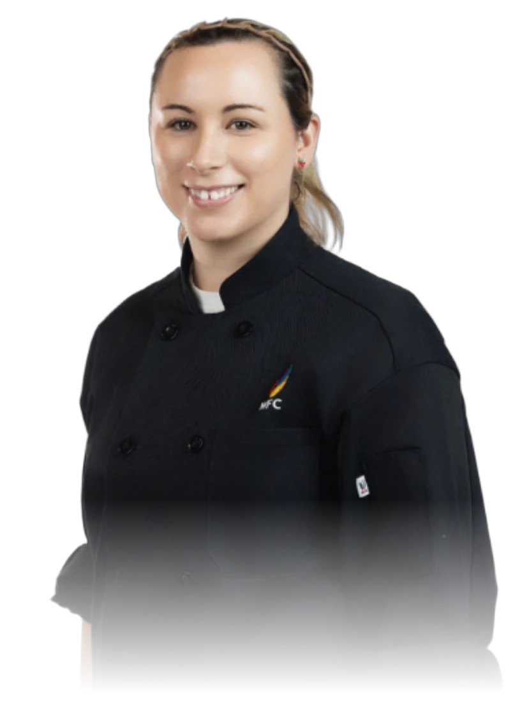

In
Brooke Silk

- 3× World Food ChampionshipsAustralian Champion (1st)Dessert category – 2023, 2024, & 2025
- 1× World Food Championships (3rd)Dessert category – Indianapolis 2024
- 2× Best Sole Operator2025 & 2026
- 1× Australian Pro Chef of the Year (Finalist)2026
Quality dining and fine food, brought directly to you.
Book an experience Illawarra & Sydney